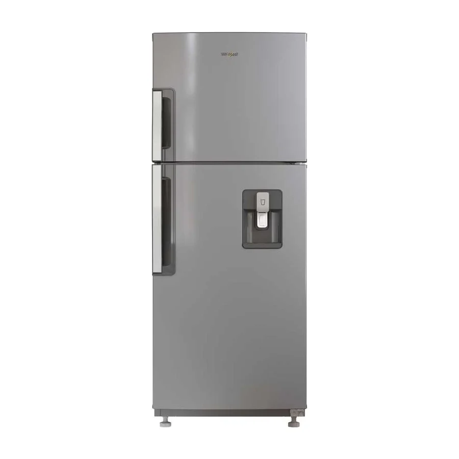
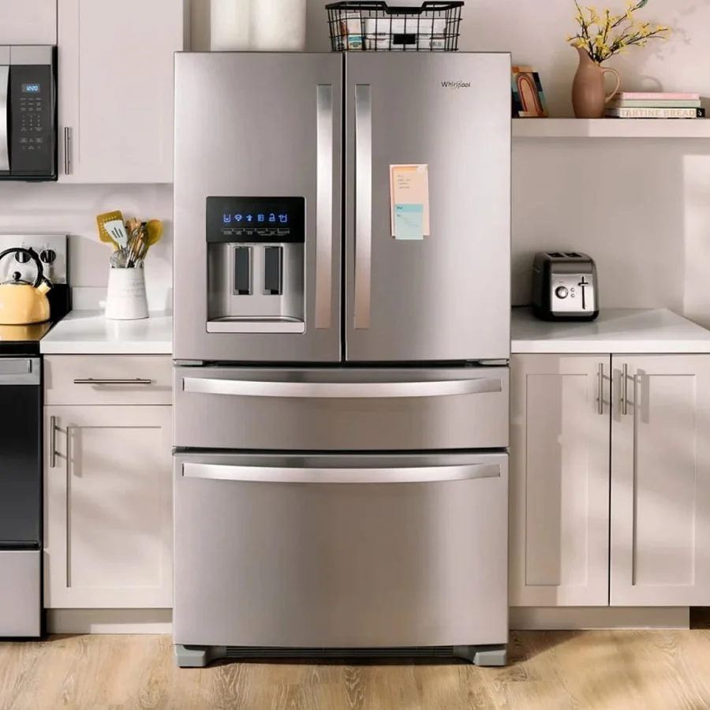

Desconecta y vacía
Desconecta el equipo, pasa los alimentos a una hielera y abre las puertas.Deja que se derrita solo
Pon toallas y un recipiente. No uses objetos filosos ni secador de pelo.Limpia y seca
Limpia con agua tibia y bicarbonato, seca y revisa el empaque.Si la escarcha vuelve pronto
Puede haber un problema de descongelación o de sellado: pide una revisión.Preguntas frecuentes
¿Puedo pedir ayuda por WhatsApp?
Sí. Escríbenos al 099 350 8191 con el modelo y la falla y te orientamos.
¿Cuándo conviene llamar a un técnico?
Cuando la falla se repite, el equipo hace ruidos nuevos, hay fugas o olor a quemado, o ya probaste lo básico sin resultado.
¿La visita incluye diagnóstico?
Sí: probamos el equipo, te explicamos la causa y te damos el costo antes de reparar. Tú decides si continuamos.